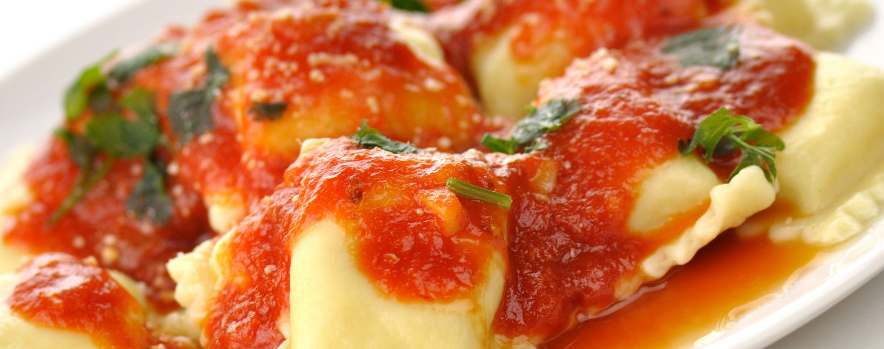

The best place for the best recipes
Cheese Ravioli

Steps
- Mound the flour and salt together on a work surface and form a well. Beat the teaspoon of olive oil, 2 eggs, and water in a bowl. Pour half the egg mixture into the well. Begin mixing the egg with the flour with one hand; use your other hand to keep the flour mound steady. Add the remaining egg mixture and knead to form a dough.
- Knead the dough until smooth, 8 to 10 minutes; add more flour if the dough is too sticky. Form the dough into a ball and wrap tightly with plastic. Refrigerate for 1 hour.
- While the dough is resting, prepare the ravioli filling. Combine the ricotta cheese, cream cheese, mozzarella cheese, provolone cheese, egg, and parsley and mix well. Set the filling aside.
- Heat 2 tablespoons of olive oil in a skillet over medium heat. Add the crushed garlic and pesto sauce and cook for one minute. Pour in the heavy cream, raise the heat to high, and bring the sauce to a boil. Reduce the heat and simmer for 5 minutes. Add the Parmesan cheese and stir until the cheese melts. Remove the pan from the heat and keep warm.
- Meanwhile, in a separate saucepan, warm the marinara sauce over medium-low heat.
- Preheat an oven to 375 degrees F (190 degrees C). Beat the egg with the tablespoon of water to make the egg wash.
- Roll out the pasta dough into thin sheets no thicker than a nickel. To assemble the ravioli, brush the egg wash over a sheet of pasta. Drop the filling mixture on the dough by teaspoonfuls about one inch apart. Cover the filling with the top sheet of pasta, pressing out the air from around each portion of filling. Press firmly around the filling to seal. Cut into individual ravioli with a knife or pizza cutter. Seal the edges.
- Fill a large pot with lightly salted water and bring to a rolling boil over high heat. Stir in the ravioli, and return to a boil. Cook uncovered, stirring occasionally, until the ravioli float to the top and the filling is hot, 4 to 8 minutes. Drain well.
- Grease a baking sheet. Place the cooked ravioli on the sheet pan and bake in the preheated oven until brown, about 4 minutes.
- To serve the ravioli, divide them among four warmed serving bowls. Drizzle the marinara sauce over the ravioli and then top with the cream sauce.
Ingredients
| What | How much/many |
| Flour | 2 cups |
|---|---|
| Salt | 1 pinch |
| Olive oil | 3 teaspoons |
| Eggs | 4 |
| Water | 2 1/2 |
| Ricotta cheese | 8 ounces |
| Cream cheese | 4 ounces |
| Mozzarella cheese (shredded) | 1/2 cup |
| Provolone cheese (shredded) | 1/2 cup |
| Dried parsley | 1 1/2 teaspoons |
| Garlic (crushed) | 2 cloves |
| Basil pesto sauce | 3 tablespoons |
| Heavy cream | 2 cups |
| Parmesan cheese (grated) | 1/4 cup |
| Marinara Sauce | 24 ounces |